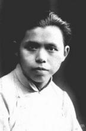
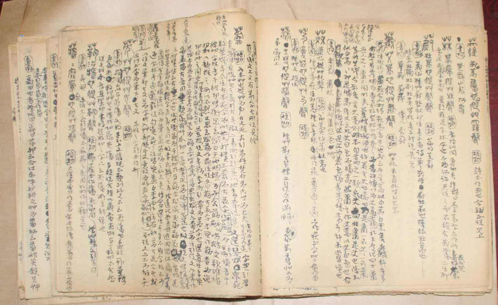
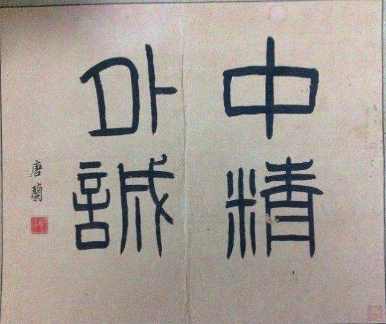

·Introduction
Tang Lan's photo
Tang Lan (1901-January 11, 1979), formerly known as Zhang Pei, also known as Pei Lan, Jing Lan, the word Lichang,
also Li An and Li Xu, and the pseudonym Zeng Ming.
Born in Jiaxing, Zhejiang, he is a famous philologist, historian and epigrapher in modern China.
Tang Lan has been engaged in teaching and academic research throughout her life. She has written many works. He has deep attainments in many fields
such as ancient script, phonology, exegesis, and have made great contributions to the field.
Tang Lan has taught at Northeastern University, Peking University, Beijing Normal University, Tsinghua University,
Furen University, and Southwest Associated University.
Later, he became the director of the Academic Committee of the Palace Museum,
the director of the exhibition room, the director of the art history department, and the vice president.
He died in Beijing on January 11, 1979.
·Biography

Tang Lanqing was born in Xiushuidou, Jiaxing City, Zhejiang Province in the 27th year of Guangxu's reign (1901).
In 1917, he studied medicine from Chen Zhongnan, and later opened Jinglan Hospital in Xiangjiayang, the urban area.
As early as the early 1920s, he wrote the four volumes of Shuowen Zhu, and later devoted himself to the study of bronze inscriptions and oracle bone inscriptions.
From 1924 to 1930, he worked as a tutor in Zhou Jiayuan's family in Tianjin.
In May 1931, Tang Lan became a lecturer at Northeastern University.
In 1935, he became a professor at Peking University, and the next year he was the dean of the Chinese Department.
In 1940, Tang Lan was appointed as a professor in the Department of Chinese,
and at the same time as a tutor at the Institute of Arts and Sciences of Peking University in the Southwest Associated University.
After 1949, he was still a professor and acting director of the Chinese Department of Peking University.
On January 11, 1979, Tang Lan died of illness in Beijing. According to his long-cherished wish,
Tang Lan was posthumously recognized as a member of the Communist Party of China.
·Thoughts

In the aspect of ancient philology, he not only tested and explained many difficult characters, but also established a set of relatively complete and systematic research methods of ancient characters,
such as contrast (or comparison) method, deduction method, radical analysis method, and historical textual research method,
so that the study of ancient writing got rid of the subjective speculation of the past, and embarked on a more scientific track.
In terms of philology, he advocated that philology should be separated from phonology and exegesis and become an independent development discipline,
and opposed the study of philology only as a tool for the research of other disciplines.
In the study of ancient history, he advocated that the stages of slave society and feudal society should be at the turn of the Western Zhou Dynasty and
the Spring and Autumn Period. He puts forward his own unique views on the calculation of the Shang, Xia and Zhou chronologies, and also has a unique argument for the origin and development of bronze ware.
In short, he advocated that philology, history, archaeology and other disciplines should be organically linked using the viewpoint of dialectical materialism.
·Works

Compendium of Natural Classification of Oracle Bone Inscriptions, 1999
"Mr. Tang Lan's Golden Essays" 1995
"History of Western Zhou Dynasty Bronze Inscriptions" 1986
"Research on Ancient Writings", 1980
"Contempt for the Calendar", 1979